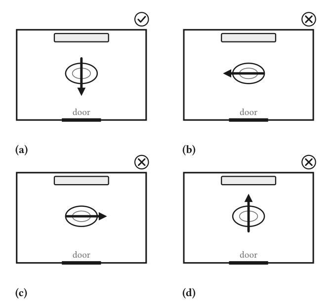

Re-typeset from PDF · 2 pages
How to poop
Abstract—Some students may have deficiencies in their physiological constitution or mode of thinking, or may simply lack experience in defecation, and therefore do not know how to defecate correctly; problems large and small occur continually. This paper is intended to guide such students. It specifies the correct orientation of the body relative to the squat pan, positioning directly above the pan, the preparatory removal of trousers, and the stable execution of defecation, and it then describes two advanced techniques—smartphone use and concomitant urination—that may be attempted only after the basic procedure has been mastered. Finally, it sets out the post-defecation procedures of wiping, disposal of toilet paper, dressing, and flushing, and identifies flushing as the decisive step: if flushing is not successfully completed, the entire operation is deemed to have failed. Keywords—squat toilet, defecation, sanitation, hygiene, flushing, student housing
1 Introduction
Some students may have deficiencies in their physiological constitution or mode of thinking, or may lack experience in defecation, and therefore do not know how to defecate correctly; problems large and small occur continually. This paper is intended to guide such students through the process.1 The guidance proceeds in three stages: alignment of the body with the pan (Section 2), the act of defecation together with the advanced techniques that may accompany it (Section 2.5), and the procedures required after defecation (Section 3).
2 How Should the Buttocks Be Aligned with the
Pan So As Not to Defecate Outside It?
2.1 Direction of Use
After entering the cubicle and locking the door, squat down with your face toward the door, so that the water tank is directly behind your body. Do not let the door be at your left or right side (do not be surprised—this is a real case), do not turn your back to the door, and do not defecate in the reverse direction (Fig. 1).
2.2 Positioning Directly Above the Pan
Position yourself directly above the pan. In particular, do not squat too far back, lest the feces fall outside the pan or even onto the water tank (do not be surprised—this too is a real case).
2.3 Removal of Trousers
Remove all trousers, including outer trousers, thermal underwear, underpants, and any other garments of this kind.
2.4 Commencement of Defecation
Having completed the above steps, you may begin to defecate. Keep the body stable throughout; do not sway forward, backward, left, or right. Those defecating for the first time may hold the door or the partition for support, so as to prevent accidents.
1This paper is the English-language edition of the Chinese guidance note 拉屎须知 [1]. Section numbering has been adapted to the present format; the substance follows the original.

2.5 Advanced Techniques
Once the above steps have been mastered sufficiently, the following advanced techniques may be attempted.
2.5.1 Use of a Smartphone While squatting, you may take out a mobile phone and browse the Internet. The purpose is to relieve the boredom of defecation. Before doing so, however, you must first lower your head and confirm that your feces can fall accurately into the pan; only when this has been confirmed may you begin browsing. Take care throughout to prevent the phone from falling.
2.5.2 Concomitant Urination While squatting, you may also attend to urination. This requires the simultaneous use of hand and eye: the trajectory must be observed and adjusted at all times so that urine does not fall outside the pan (this too is a real case; on one occasion it caused the entire third-floor restroom to be covered in urine). The maneuver demands superior skill and is not recommended for beginners or amateurs to attempt lightly.
3 What Else Must We Do After Defecation?
3.1 Wiping the Buttocks
Ordinarily, toilet paper that meets hygiene standards should be used to clean the buttocks; under special circumstances, however, other cleaning materials may be employed. The method of wiping differs from person to person, and there is no right or wrong; this paper does not elaborate on it.
3.2 Disposal of Toilet Paper
Some students may have questions on this point; we will elaborate on it in detail later.2
3.3 Pulling Up Trousers
This step is the exact reverse of Section 2.3. All the trousers removed in the foregoing steps must now be put back on. Special note. If improper operation causes feces to adhere to the hands, do not smear the feces on any part of the cubicle, including the water tank (this too is a real case). After completing the wiping procedure, wash the hands carefully.
4 Summary
This paper has sought to set out the points at which problems are most likely to arise in the course of defecation and to give appropriate technical essentials for each operational step. It is hoped that all students in Dormitory No. 1 will study it conscientiously and grasp its content, and will together follow a new, civilized path of defecation consistent with the development of Dormitory No. 1.
References
[1] K. Zhang and trunktrick, “拉屎须知” [How to poop], internal guidance note, Dormitory No. 1, 2026.
2The source document defers this topic to a later discussion that does not appear in the text. The sentence is retained here for fidelity to the original.